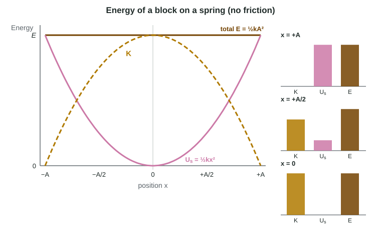

Energy of Simple Harmonic Oscillators
With no friction the mechanical energy of an oscillator is constant: for a block on a spring E = ½kA², all potential at the turning points and all kinetic at equilibrium; doubling the amplitude quadruples the energy.
Part 1 · Hook
Why this matters
Part 2 · Before you start
What this builds on
Part 3 · Prerequisite check
Quick check before you start
1. A spring with k = 400 N/m is compressed 0.050 m. How much elastic potential energy does it store?
- 0.50 J
- 1.0 J
- 10. J
- 20. J
Show the answer
U_s = ½k(Δx)² = ½(400 N/m)(0.050 m)² = 0.50 J.
- Correct: 0.50 J:
- 1.0 J:
- 10. J:
- 20. J:
2. When is the mechanical energy of a system constant?
- When no nonconservative forces (like friction) do work on it
- When the object moves at constant speed
- When the net force is zero
- Always
Show the answer
Mechanical energy changes only when nonconservative or external forces do work.
- Correct: When no nonconservative forces (like friction) do work on it:
- When the object moves at constant speed:
- When the net force is zero:
- Always:
3. In SHM, where is the object's speed greatest?
- At equilibrium
- At the turning points
- Halfway to a turning point
- It is the same everywhere
Show the answer
The restoring force has sped it up all the way to x = 0.
- Correct: At equilibrium:
- At the turning points:
- Halfway to a turning point:
- It is the same everywhere:
Part 4 · See it
See it first

Part 5 · Step by step
How it works, step by step
- The block is released from rest at x = Aall the system's energy is spring potential energy, ½kA²
- The spring pushes the block toward x = 0 and does positive work on itspring energy turns into kinetic energy
- At x = 0 the spring is relaxedall the energy is kinetic and the block moves at top speed
- No friction removes energy from the systemthe total stays ½kA², so the block reaches the same distance A on the other side
Part 6 · Key ideas
Key ideas
- For a block and spring with no friction, E = K + Us is constant. Name the system (block + spring) and the condition (no friction) before you use it.
- The total energy is set by the amplitude: E = ½kA². At the turning points K = 0; at equilibrium Us = 0 and K = E.
- Us = ½kx² goes as x², so at x = A/2 the spring holds only a quarter of the energy. Energy graphs against position are parabolas, and the total is a flat line.
- For a pendulum, the energy trades between kinetic and gravitational potential energy: mgΔy = ½mv² at the bottom.
Part 7 · Misconception
A common mistake
The wrong idea: Halfway to the turning point the energy is half kinetic and half potential.
What actually happens: Potential energy goes as x², so at x = A/2 the spring holds ¼ of the energy and the block has ¾ as kinetic energy. The half-and-half point is at x = A/√2.
Part 8 · Check yourself
Check yourself
Exam-style questions. Anything you miss goes into your review queue.
Diagram
A glider on an air track
The glider is pulled to x = +0.12 m and released from rest. Friction is negligible. The system is the glider and the spring.
1. What is the total mechanical energy of the glider-spring system? Give the value and its unit.
Type a number and its unit.
Show the answer
At release the glider is at rest, so all the energy is in the spring: E = ½kA² = ½(50 N/m)(0.12 m)² = 0.36 J. With no friction this total stays the same throughout.
- Answer: 0.36 J
2. What is the glider's speed as it passes x = 0? Give the value and its unit.
Type a number and its unit.
Show the answer
At x = 0 the spring has no energy, so K = E = 0.36 J. ½mv² = 0.36 J gives v = √(2 × 0.36 J / 0.50 kg) = √1.44 m/s = 1.2 m/s.
- Answer: 1.2 m/s
3. What is the glider's kinetic energy at x = +0.060 m? Give the value and its unit.
Type a number and its unit.
Show the answer
U_s = ½(50 N/m)(0.060 m)² = 0.090 J. K = E − U_s = 0.36 J − 0.09 J = 0.27 J: three quarters of the energy is kinetic at half the amplitude.
- Answer: 0.27 J
4. Which statement explains why the glider's speed is the same each time it passes x = 0?
- With no friction, the system's energy stays fixed, and at x = 0 it is all kinetic
- The spring force at x = 0 is zero, so the glider's speed at that point stays fixed
- The glider's momentum is conserved, because the spring force is internal to the glider
- The period does not depend on the amplitude, so each pass at x = 0 takes the same time
Show the answer
With no friction, the only force doing work on the glider is the spring force, which is internal to the glider-spring system and conservative. So the system's mechanical energy is constant, and at x = 0 all of it is kinetic energy.
- Correct: With no friction, the system's energy stays fixed, and at x = 0 it is all kinetic: Right: energy conservation with its condition (no nonconservative work).
- The spring force at x = 0 is zero, so the glider's speed at that point stays fixed: Zero force at that instant does not explain why the speed is the same on every pass; the energy argument does.
- The glider's momentum is conserved, because the spring force is internal to the glider: The spring (attached to a wall) exerts an external force on the glider, and the glider's momentum keeps changing direction.
- The period does not depend on the amplitude, so each pass at x = 0 takes the same time: The period is unrelated; the speed at x = 0 depends on the energy, ½kA².
5. In SHM with no friction, which quantity has the same value at every point in the motion?
- The total mechanical energy
- The kinetic energy of the object
- The potential energy of the system
- The speed of the object
Show the answer
With no nonconservative work done, the mechanical energy K + U stays constant; only how it is split changes.
- Correct: The total mechanical energy: Right: E = K + U is constant.
- The kinetic energy of the object: K goes from zero at the ends to its largest value at equilibrium.
- The potential energy of the system: U is largest at the ends and smallest at equilibrium.
- The speed of the object: The speed changes from zero to its top value and back.
6. A student says: "At the turning points of a mass on a spring, the energy is zero, because the mass is not moving." What is the error?
- K is zero there, but the spring holds the energy as U_s
- The mass is moving at the turning points, so its kinetic energy is not zero
- The energy is zero at equilibrium instead, because the spring is relaxed there
- There is no error: the energy drops to zero and is restored by the spring
Show the answer
At x = ±A the kinetic energy is zero, but the spring is stretched or compressed the most, so U_s = ½kA², the whole total.
- Correct: K is zero there, but the spring holds the energy as U_s: Right: zero kinetic energy is not zero total energy.
- The mass is moving at the turning points, so its kinetic energy is not zero: At the turning points the mass is momentarily at rest, so K is zero.
- The energy is zero at equilibrium instead, because the spring is relaxed there: At equilibrium U_s = 0, but the mass is moving fastest, so K holds all the energy.
- There is no error: the energy drops to zero and is restored by the spring: The total mechanical energy is constant with no friction; it never drops to zero.
Part 9 · Summary
Summary
Part 10 · Up next
What comes next
Part 11 · Connections